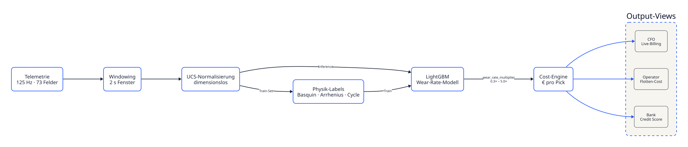
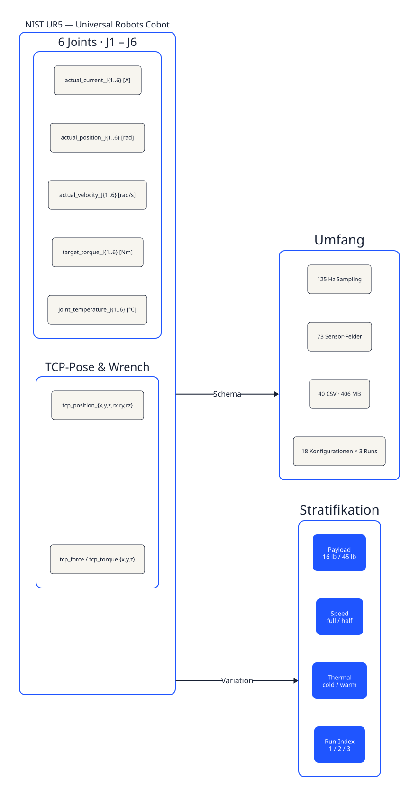
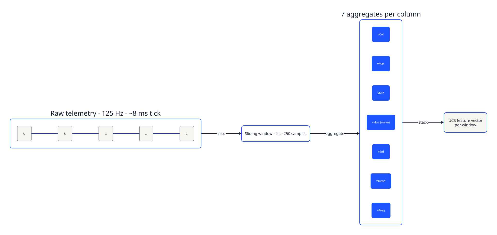
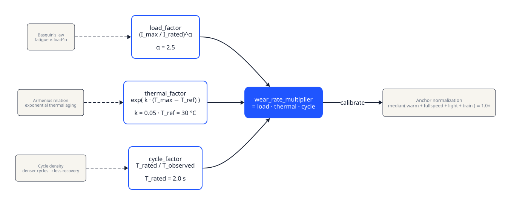
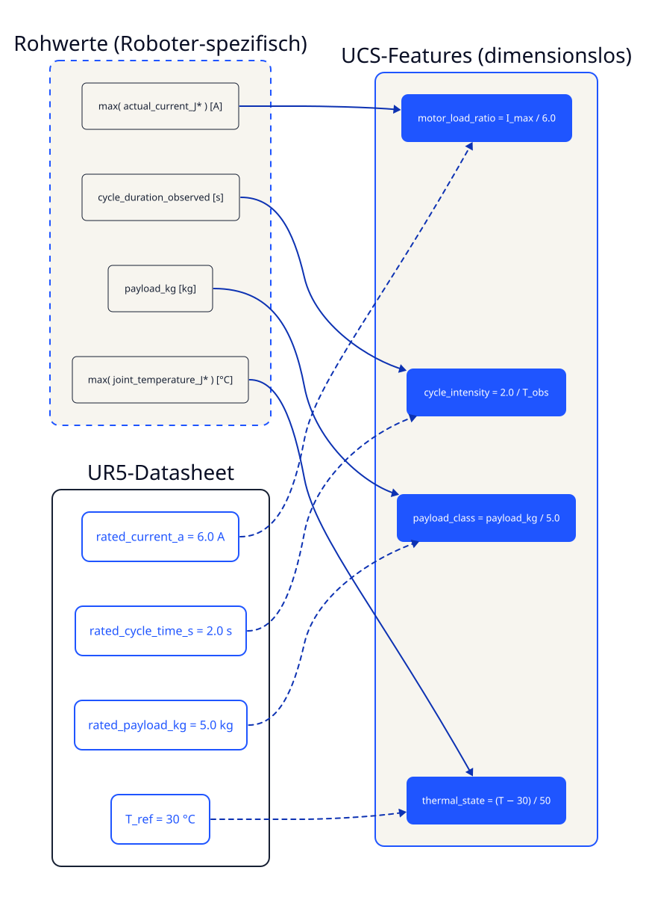
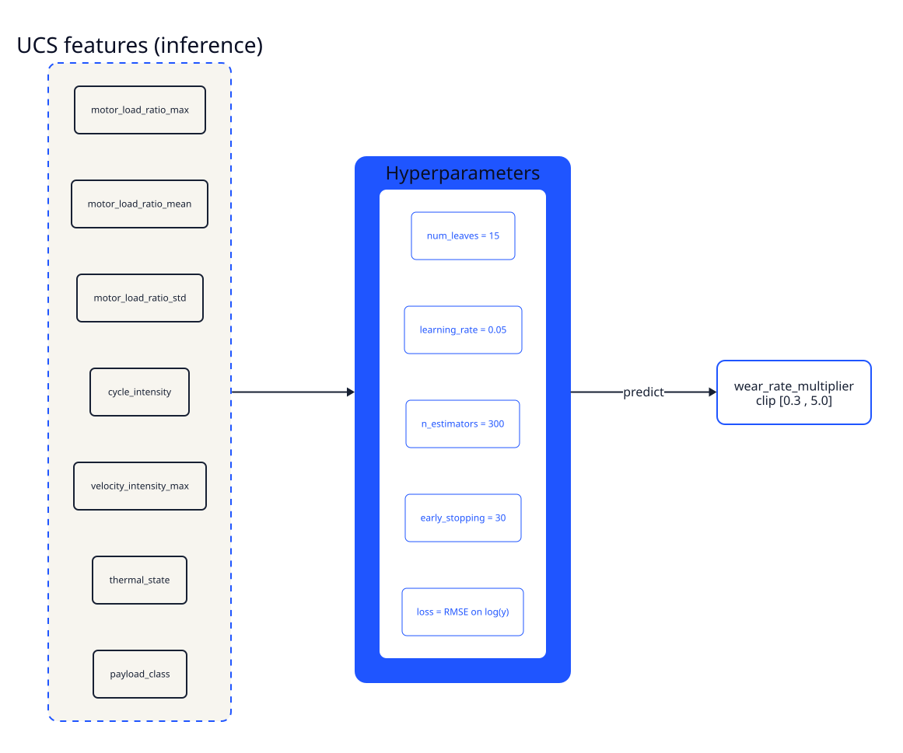
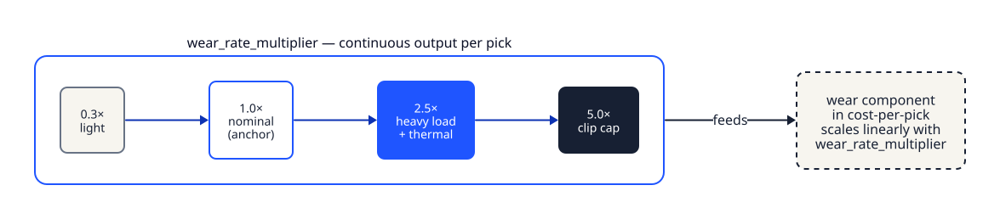
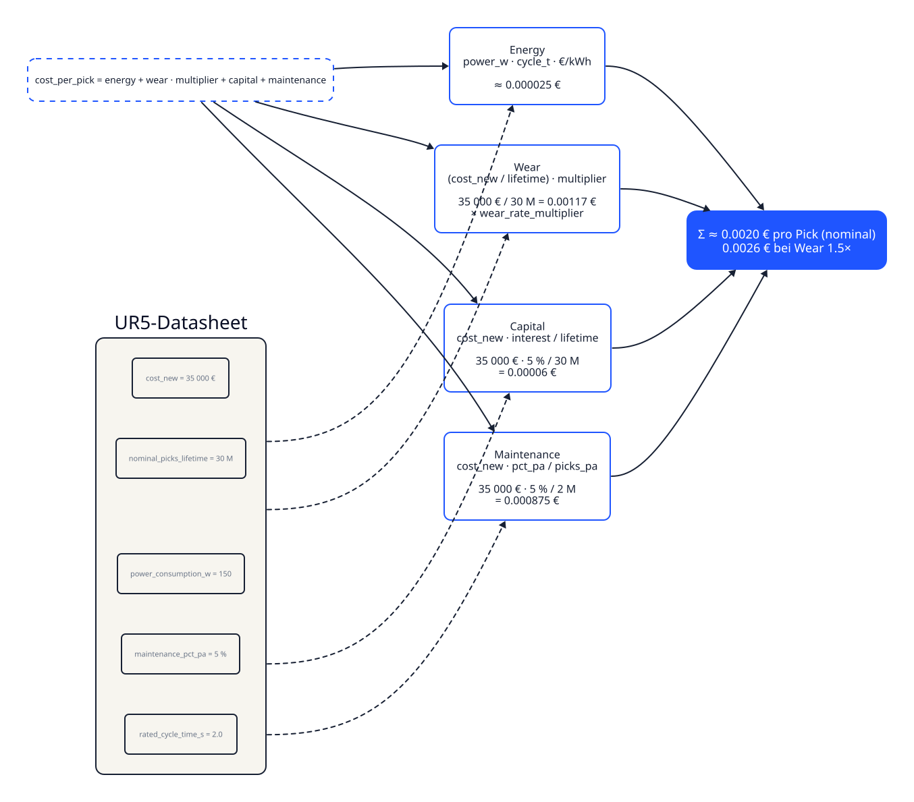
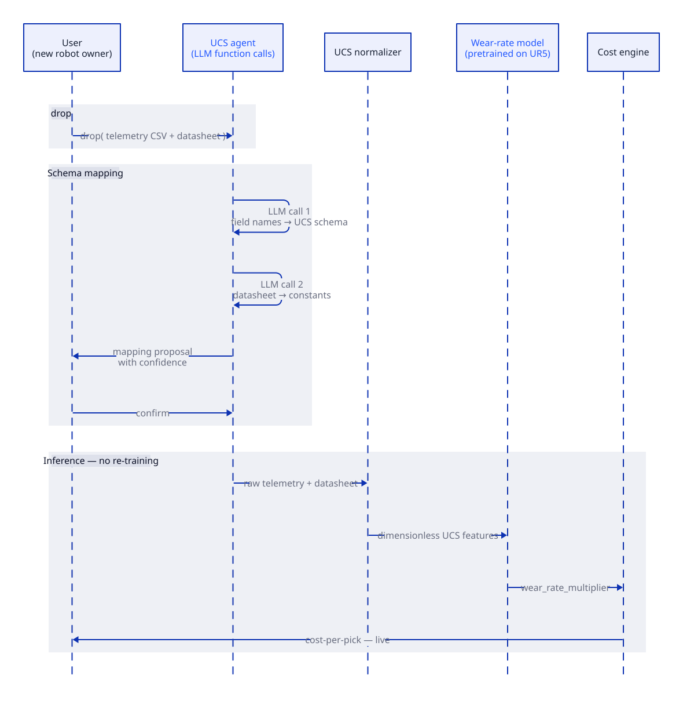

Von 73 Sensorfeldern zu € 0,002 pro Pick.
UNIFI übersetzt Roboter-Telemetrie in bankenfähige Finanzdaten. Diese Seite zeigt die komplette Pipeline: Datensatz, Sampling, Wear-Label-Generierung, dimensionslose Normalisierung, ML-Modell und Cost-per-Pick-Engine.

UNIFI / pipeline-overviewNIST UR5 Cobot, 6 DOF
18 Konfigurationen × 3 Runs, je actual_current, position, velocity, target_torque, joint_temperature für sechs Joints — plus TCP-Pose und Wrench. Stratifiziert über Payload, Speed und Coldstart.

UNIFI / data125 Hz → 2 s Fenster → 7 Aggregate
Aus dem 125-Hz-Stream werden überlappende 2-Sekunden-Fenster geschnitten. Pro Feld berechnen wir sieben Aggregate (Count, Max, Min, Mean, Std, Trend, Frequency) — daraus entsteht der UCS-Feature-Vektor.

UNIFI / windowingPhysik statt Heuristik
Labels werden nicht geraten, sondern physikalisch berechnet: multiplier = (I/I_rated)α · exp(k·ΔT) · T_rated/T_obs. Verankerung: Median über warm + fullspeed + light + Train-Fenster ≡ 1.0×.

UNIFI / labels.physicsDatasheet macht das Modell roboteragnostisch
Rohe Werte sind roboter-spezifisch. Wir teilen jeden Sensor durch seinen Datasheet-Nennwert — I_max / 6.0 A, 2.0 s / T_obs, payload_kg / 5.0 kg. So lernt das Modell relative Beanspruchung, nicht UR5-Strom-Magie.

UNIFI / ucs.normalizerLightGBM auf log(Wear)
Gradient-Boosted Trees mit num_leaves=15, lr=0.05, n_estimators=300. Trainiert auf log(multiplier) mit RMSE-Loss und Early-Stopping. Vorhersagen werden auf [0.3, 5.0] geclippt.

UNIFI / models.wear_rateEin kontinuierlicher Multiplier
Pro Pick gibt das Modell genau einen Wert aus — den wear_rate_multiplier. Er moduliert die Verschleißkomponente in der Cost-Engine. Keine Klassen, kein RUL — eine Zahl.

UNIFI / outputCost-per-Pick — vier Komponenten
cost = energy + wear·multiplier + capital + maintenance. Reine Arithmetik aus Datasheet-Werten und ML-Output. UR5: 35.000 € / 30M Picks → 0,00117 € Verschleiß bei 1.0×, skaliert linear mit dem Multiplier.

UNIFI / cost.engineFremder Roboter, kein Re-Training
User droppt Telemetrie + Datasheet. Ein LLM-Agent mappt das Schema auf UCS und extrahiert Datasheet-Konstanten. Dasselbe vortrainierte Modell scort den fremden Stream — Cost-per-Pick tickt live.

UNIFI / ucs.agent